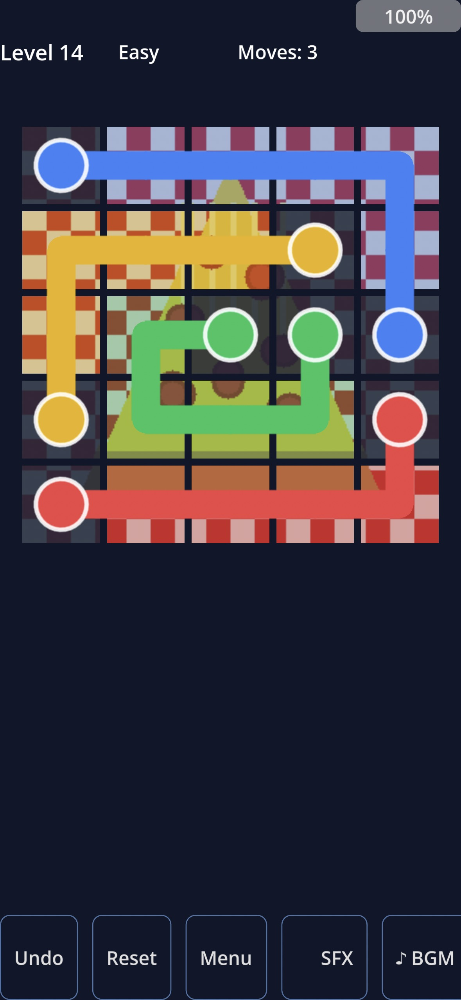
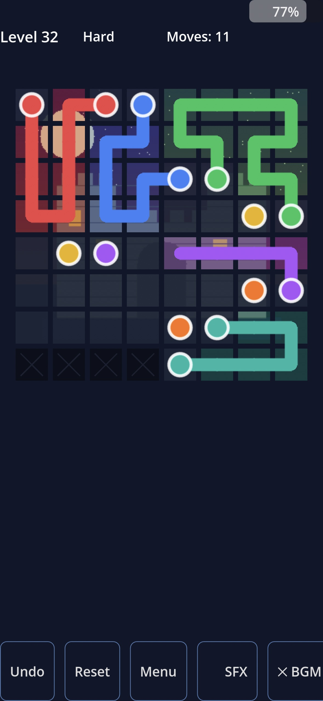

Guide streams of color through clever puzzles. Clean design, satisfying progression, zero stress. ColorFlow — easy to learn, hard to forget.
Available on the App Store

ColorFlow is a minimalist puzzle game built around the elegant logic of color and movement. Each level presents a field of colored nodes waiting to be connected — your goal is to route every color to its match without crossing paths or leaving gaps.
Starting simple and scaling to genuinely tricky challenges, ColorFlow rewards patient thinking over frantic tapping. No timers forcing rushed decisions. No pay-to-win shortcuts. Just clean puzzles, crisp visuals, and the quiet satisfaction of watching every color fall perfectly into place.
Features progressively challenging level packs, a clean distraction-free interface, and instant replay for any puzzle.